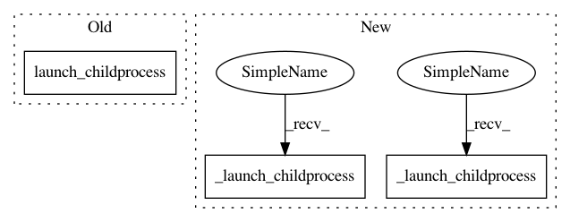

3399fe3db90936ecc60d25307625afc7967ddbd4,programs/e2boxer.py,boxerTopaz,do_train,#Any#,1327
Before Change
launch_childprocess("e2proc2d.py micrographs/*.hdf topaz/mrc_micro/@.mrc")
launch_childprocess(f". {boxerTopaz.conda_init_path} && {boxerTopaz.conda_activate_cmd} && topaz convert -s {downsample} -o topaz/processed/particles/particles.txt boxfiles/*.box ;echo")
launch_childprocess(f". {boxerTopaz.conda_init_path} && {boxerTopaz.conda_activate_cmd} && topaz preprocess -s {downsample} -o topaz/processed/micrographs/ topaz/mrc_micro/*.mrc ;echo")
launch_childprocess(f". {boxerTopaz.conda_init_path} && {boxerTopaz.conda_activate_cmd} && topaz train --train-images topaz/processed/micrographs/ --train-targets topaz/processed/particles/particles.txt --radius 3 --model {model} --image-ext .mrc --method GE-binomial --autoencoder 0 --num-particles {nexpected} --epoch-size 1000 --num-epochs 10 --num-workers {threads} --device {gpu} --save-prefix topaz/model --output topaz/results.txt ;echo")
@staticmethod
After Change
launch_childprocess("e2proc2d.py micrographs/*.hdf topaz/mrc_micro/@.mrc")
boxerTopaz._launch_childprocess(f"topaz convert -s {downsample} -o topaz/processed/particles/particles.txt boxfiles/*.box ;echo")
boxerTopaz._launch_childprocess(f"topaz preprocess -s {downsample} -o topaz/processed/micrographs/ topaz/mrc_micro/*.mrc ;echo")
boxerTopaz._launch_childprocess(f"topaz train --train-images topaz/processed/micrographs/ --train-targets topaz/processed/particles/particles.txt --radius 3 --model {model} --image-ext .mrc --method GE-binomial --autoencoder 0 --num-particles {nexpected} --epoch-size 1000 --num-epochs 10 --num-workers {threads} --device {gpu} --save-prefix topaz/model --output topaz/results.txt ;echo")
@staticmethod
def do_autobox(micrograph,goodrefs,badrefs,bgrefs,apix,nthreads,params,prog=None):
threshold = boxerTopaz.threshold.getValue()
In pattern: SUPERPATTERN
Frequency: 3
Non-data size: 3
Instances
Project Name: cryoem/eman2
Commit Name: 3399fe3db90936ecc60d25307625afc7967ddbd4
Time: 2021-02-02
Author: shadowwalkersb@gmail.com
File Name: programs/e2boxer.py
Class Name: boxerTopaz
Method Name: do_train
Project Name: cryoem/eman2
Commit Name: 3399fe3db90936ecc60d25307625afc7967ddbd4
Time: 2021-02-02
Author: shadowwalkersb@gmail.com
File Name: programs/e2boxer.py
Class Name: boxerTopaz
Method Name: do_autobox_all
Project Name: cryoem/eman2
Commit Name: 3399fe3db90936ecc60d25307625afc7967ddbd4
Time: 2021-02-02
Author: shadowwalkersb@gmail.com
File Name: programs/e2boxer.py
Class Name: boxerTopaz
Method Name: do_autobox
Project Name: cryoem/eman2
Commit Name: 3399fe3db90936ecc60d25307625afc7967ddbd4
Time: 2021-02-02
Author: shadowwalkersb@gmail.com
File Name: programs/e2boxer.py
Class Name: boxerTopaz
Method Name: do_train